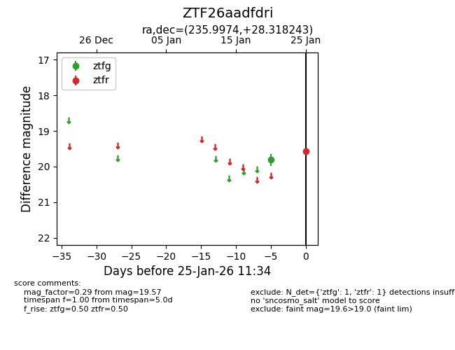
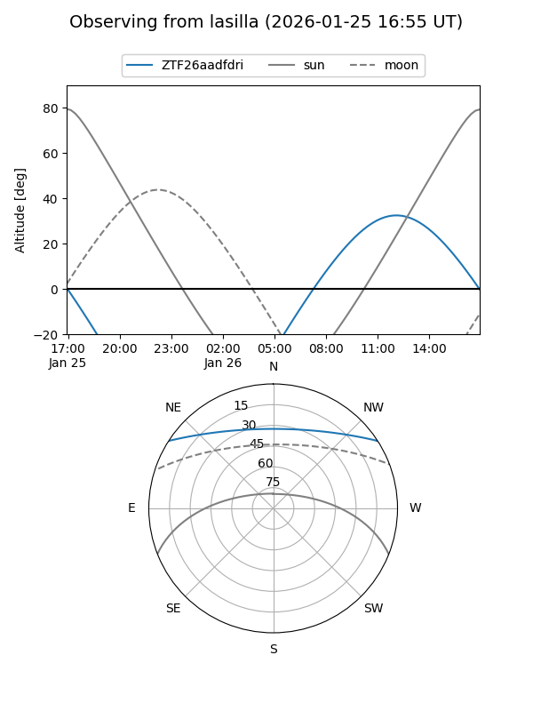
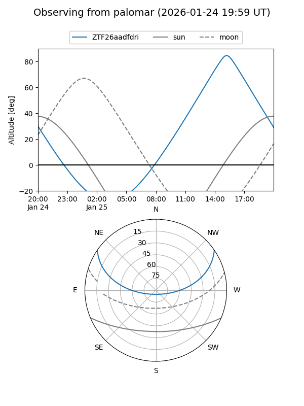

ZTF26aadfdri
Target ZTF26aadfdri at 2026-01-25 11:36
Aliases and brokers:
FINK: link
Lasair: link
ALeRCE: link
alt names
ZTF26aadfdri (ztf,fink_ztf)
Coordinates:
equatorial (ra, dec) = 235.9974,+28.31824
equatorial (HMS+DMS) = 15:43:59.37,+28:19:05.67
galactic (l, b) = (45.0523,+52.00065)
Flags:
Photometry:
last ztfg=19.81, ztfr=19.57
1 ztfg, 1 ztfr detections
Lightcurve

Visibility


Additional plots